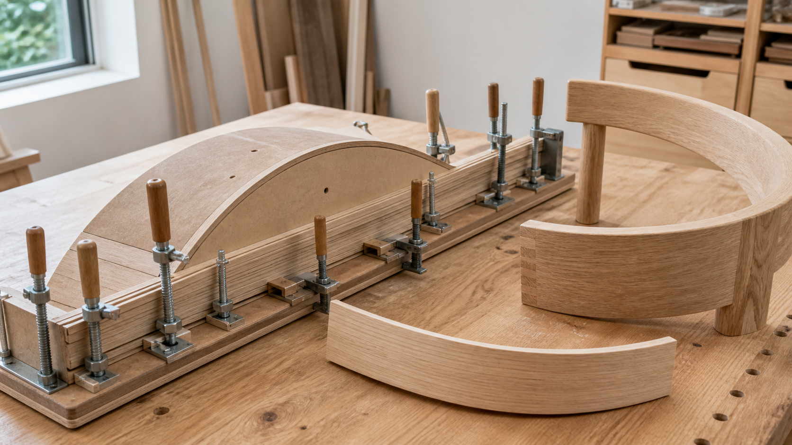

적층 굽힘이 가구의 곡선을 만드는 방식

가구의 곡선은 겉으로는 부드러워 보이지만, 제작 방식에 따라 구조적 성격이 크게 달라집니다. 두꺼운 판재에서 곡선을 잘라내면 나뭇결이 곡선을 따라가지 못하는 구간이 생기고, 그 부분은 충격이나 하중에 약해질 수 있습니다. 반대로 얇은 목재를 여러 겹으로 나누어 곡선 틀에 맞춰 붙이면, 각 층의 결이 곡선을 따라 이어지는 부재를 만들 수 있습니다. 이것이 적층 굽힘, 또는 bent lamination의 핵심입니다.
적층 굽힘은 장식적인 곡면을 만드는 기술만은 아닙니다. 의자 등받이, 팔걸이, 라운지 체어의 프레임, 둥근 테이블 앞치마, 곡선 수납장 문짝처럼 몸에 닿거나 하중을 받는 부재에서 특히 의미가 있습니다. 곡선이 손과 허리를 부드럽게 받아 주면서도, 부재 자체는 충분한 강성과 반복성을 가져야 하기 때문입니다.
곡선을 잘라내는 것과 곡선을 만드는 것은 다릅니다
가장 단순한 방법은 넓은 판재에 곡선을 그리고 톱으로 잘라내는 것입니다. 이 방식은 빠르고 직관적이지만, 곡선의 안쪽과 바깥쪽에서 결 방향이 끊기는 구간이 생깁니다. 특히 의자 다리나 팔걸이처럼 힘을 받는 부재에서는 짧은 결 방향이 파손의 시작점이 될 수 있습니다. 재료 낭비도 큽니다. 필요한 곡선을 얻기 위해 실제 부재보다 훨씬 큰 판재를 써야 하기 때문입니다.
적층 굽힘은 접근이 다릅니다. 두꺼운 부재를 한 번에 억지로 휘는 대신, 목재를 얇은 층으로 나누어 각각이 큰 저항 없이 곡선을 따라가게 합니다. 그 층들 사이에 접착제를 바르고, 정확한 곡선 틀에 맞춰 압착한 뒤 경화시키면 여러 겹이 하나의 곡선 부재처럼 움직입니다. 완성된 부재는 겉으로는 한 덩어리처럼 보이지만, 내부에는 곡선을 따라 누적된 층과 접착면이 있습니다.
얇은 층이 만드는 구조적 장점
목재는 두께가 두꺼워질수록 휘기 어려워집니다. 같은 수종과 폭이라도 얇게 켠 판재는 손으로도 부드럽게 휘지만, 같은 재료가 두꺼운 한 장일 때는 작은 곡률에서 쉽게 균열이 생깁니다. 적층 굽힘은 이 차이를 이용합니다. 각 층은 얇아서 곡선 틀에 따라가고, 접착이 끝난 뒤에는 여러 층이 함께 작동해 두꺼운 곡선 부재의 강성을 갖습니다.
Fine Woodworking은 적층 굽힘을 얇은 목재 층을 붙여 곡선 부재를 만드는 방식으로 설명하며, 결이 곡선을 따라 이어지고 넓은 면의 접착이 반복되기 때문에 강한 곡선 부재를 만들 수 있다고 정리합니다. 중요한 점은 곡선이 겉모양만이 아니라 하중의 흐름과도 연결된다는 것입니다. 결이 곡선을 따라 이어지면 힘이 한 지점에서 갑자기 끊기지 않고 부재 전체로 분산됩니다.
증기 굽힘과 적층 굽힘은 같은 기술이 아닙니다
곡목 가구를 이야기하면 흔히 Thonet 의자를 떠올립니다. V&A는 Michael Thonet이 19세기 중반 증기와 금속 스트랩을 이용해 단단한 목재를 굽히는 방식으로 대량 생산 가능한 곡목 가구를 발전시켰다고 설명합니다. Thonet의 방식은 단단한 부재를 열과 압력, 지그로 성형하는 역사적 기술입니다. 카페 의자처럼 가늘고 반복적인 곡선 부재를 만들기에 매우 강력했습니다.
적층 굽힘은 그와 달리 여러 얇은 층을 접착해 형태를 고정합니다. 증기 굽힘이 한 부재의 성질을 일시적으로 바꿔 휘는 방식이라면, 적층 굽힘은 여러 층의 조합과 접착으로 곡선 부재를 새로 구성하는 방식입니다. 그래서 더 넓은 폭의 곡면, 복합 곡선, 반복 생산되는 동일 부재에 유리한 경우가 많습니다. 반면 접착선이 보일 수 있고, 정확한 두께 가공과 균일한 압착이 필요하다는 부담도 있습니다.
지그와 압착이 품질을 결정합니다
적층 굽힘의 품질은 곡선 틀, 즉 지그에서 시작됩니다. 완성 부재의 반지름과 길이, 양끝의 직선 구간, 클램프가 닿는 위치가 지그에서 결정됩니다. 지그가 정확하지 않으면 부재도 정확할 수 없습니다. 같은 의자 등받이를 여러 개 만들 때 한 개는 편하고 한 개는 어색한 경우, 재료보다 지그와 압착 과정이 원인일 때가 많습니다.
압착도 균일해야 합니다. 특정 지점만 강하게 조이고 다른 구간이 뜨면 접착선이 부분적으로 약해지거나 곡선이 매끄럽게 이어지지 않습니다. 클램프를 여러 개 쓰는 이유는 힘을 세게 주기 위해서만이 아니라, 곡선 전체에 고르게 압력을 분산하기 위해서입니다. 진공 프레스나 밴드 클램프를 쓰는 공방도 같은 문제를 다루기 위한 선택입니다.
접착선은 숨길 수도, 드러낼 수도 있습니다
적층 굽힘 부재를 가까이 보면 옆면에 얇은 층의 선이 보입니다. 이것을 결점으로 볼지, 제작 방식의 정직한 흔적으로 볼지는 디자인 의도에 따라 달라집니다. 밝은 목재에 어두운 접착선이 도드라지면 섬세한 가구에서는 거슬릴 수 있습니다. 반대로 얇은 층이 리듬처럼 보이면 곡선의 방향과 제작 방식을 설명하는 시각적 요소가 되기도 합니다.
중요한 것은 완성 뒤 많이 깎아낼 부재에는 적층 굽힘이 늘 적합하지 않다는 점입니다. 바깥층을 깊게 깎으면 내부 접착선이 넓게 드러나고, 의도하지 않은 줄무늬가 생길 수 있습니다. 따라서 설계 단계에서 최종 단면과 후가공량을 먼저 정해야 합니다. 곡선 부재를 만든 뒤 감각적으로 깎아 맞추는 방식보다, 처음부터 필요한 곡률과 단면을 계산해 층을 준비하는 방식이 더 안정적입니다.
가구 사용감과 연결되는 지점
곡선 부재는 몸과 가구가 만나는 방식을 바꿉니다. 직선 등받이는 명확하고 단정하지만, 허리와 어깨가 닿는 면에서는 압력이 특정 지점에 집중될 수 있습니다. 적층 굽힘으로 만든 등받이나 팔걸이는 부드러운 곡률을 비교적 얇고 강하게 만들 수 있어, 몸의 움직임을 더 자연스럽게 받아 줄 수 있습니다. 특히 의자에서는 구조와 인체공학이 분리되지 않습니다.
테이블과 수납 가구에서도 곡선은 단지 장식이 아닙니다. 둥근 앞치마는 다리 주변의 시각적 무게를 줄이고, 곡선 문짝은 손이 지나가는 동선을 부드럽게 만듭니다. 다만 곡선을 넣는 순간 제작 난이도와 비용은 올라갑니다. 지그 제작, 얇은 판재 가공, 접착과 압착 시간, 후가공이 모두 필요하기 때문입니다. 따라서 곡선은 ‘예쁘기 때문에’가 아니라 사용성이나 구조, 브랜드 언어에 실제로 기여할 때 선택해야 합니다.
목간의 시선
목간이 곡선 가구를 볼 때 가장 먼저 확인하는 것은 곡선의 이유입니다. 손이 닿는 앞모서리를 부드럽게 만들기 위한 곡선인지, 등받이의 압박을 줄이기 위한 곡선인지, 공간 안에서 부피감을 덜어내기 위한 곡선인지가 분명해야 합니다. 이유가 없는 곡선은 제작비만 올리고, 이유가 분명한 곡선은 매일 쓰는 감각을 조용히 바꿉니다.
적층 굽힘은 그런 곡선을 현실적인 구조로 만드는 방법입니다. 얇은 층을 정밀하게 준비하고, 정확한 지그에 맞춰 고르게 압착하며, 접착선과 후가공까지 설계에 포함할 때 곡선은 오래가는 부재가 됩니다. 좋은 원목 가구는 직선만으로 완성되지 않습니다. 때로는 나무를 얇게 나누고 다시 하나로 묶는 과정에서, 생활에 더 가까운 형태가 만들어집니다.